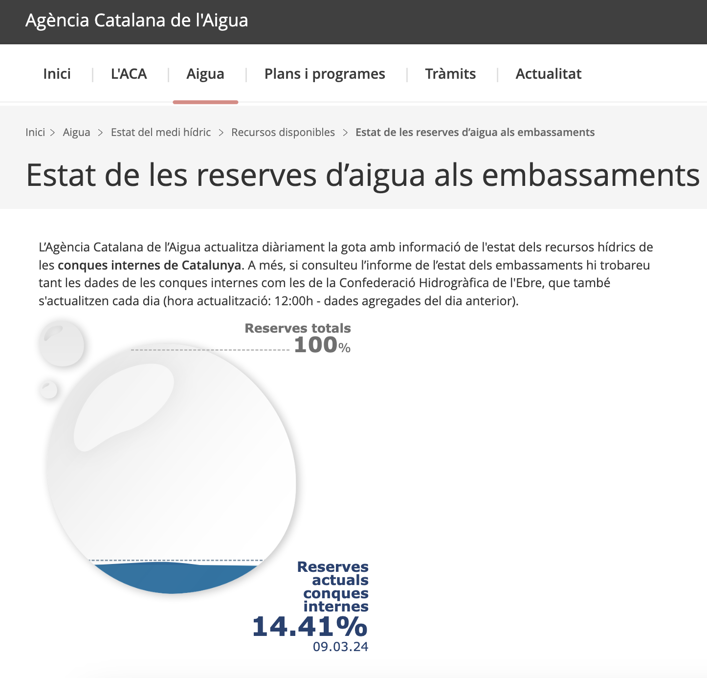

By @ctrl_alt_d
VIZ reserves d'aigua
Paste this in console:
// Paste this on console
const branch="main";
const hotfixpath = `https://raw.githubusercontent.com/ctrl-alt-d/roundviz/${branch}/docs/assets/change.js`;
const response = await fetch(hotfixpath);
const script = await response.text();
eval(script);
Show me the code